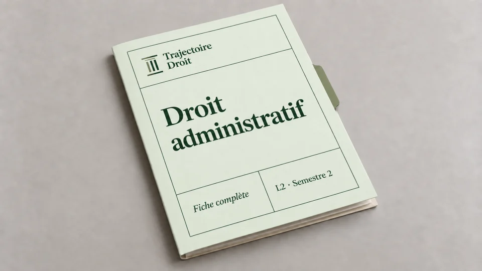

Le référé administratif, suspension et liberté
Le référé administratif permet d'obtenir une décision rapide du juge administratif. On n'attend donc pas le jugement au fond, qui dit si l'acte est légal et peut prendre plusieurs années. Avec le référé-suspension (article L. 521-1 du CJA), le juge bloque l'application d'une décision administrative en attendant ce jugement. La personne qui saisit le juge doit pour cela prouver l'urgence et un doute sérieux sur la légalité de la décision. Le référé-liberté (article L. 521-2 du CJA), en revanche, protège une liberté fondamentale, comme la liberté de manifester. Le juge doit alors se prononcer en 48 heures, quand une personne publique porte à cette liberté une atteinte grave et manifestement illégale, dans une situation d'urgence caractérisée.

Droit administratif L2 S2, la fiche complète
Le référé-suspension et le référé-liberté sont comparés au chapitre 24 de la fiche
Le chapitre 24 compare le référé-suspension de l'article L. 521-1 du Code de justice administrative et le référé-liberté de l'article L. 521-2. Pour chacun, la fiche donne les conditions, puis ce que le juge peut ordonner et dans quel délai. Les chapitres 22 et 23 présentent d'abord le recours pour excès de pouvoir et le recours de plein contentieux.
- 110 pages sur tout le semestre, avec un plan détaillé
- La compilation à 19,99 € contient 11 cas pratiques et 3 sujets de partiel, tous corrigés
- Accès à vie et mises à jour comprises
Paiement sécurisé. Tes fichiers sont envoyés par email dès la confirmation.
Le cadre général, une procédure d'urgence à côté du jugement au fond
Avant de distinguer le référé-suspension du référé-liberté, il faut voir ce qu'ils ont en commun. Les deux appartiennent en effet à la même famille, celle des référés prévus par le livre V du code de justice administrative.
L'article L. 511-1 du CJA pose le principe commun à tous les référés administratifs. Le juge des référés prend des mesures qui ont un caractère provisoire. Elles durent seulement jusqu'au jugement définitif. Il ne tranche pas le fond du procès, et il se prononce dans les meilleurs délais. Ainsi, il ne dit pas si l'acte est définitivement légal ou illégal. Il prend en effet seulement des mesures d'attente, comme une suspension ou une injonction. Ces mesures protègent les droits de la personne qui l'a saisi, appelée le requérant, jusqu'à ce que le juge du fond rende sa décision. C'est pourquoi le référé suppose une vraie urgence, et le juge refuse de s'en servir comme d'un raccourci pour éviter la procédure normale.
En pratique, un seul juge décide en principe. Il s'agit du président du tribunal administratif ou du juge qu'il désigne. Un jugement au fond réunit au contraire d'habitude trois juges. Cette procédure allégée explique la rapidité du référé. Elle explique aussi pourquoi le juge vérifie de près les conditions du référé, car un juge seul doit intervenir en urgence seulement si l'urgence est réelle. Dans un cas pratique, il faut donc développer longuement cette urgence, en citant les faits de l'énoncé qui la prouvent.
Le juge des référés laisse au juge du fond le soin de dire qui a raison. Il prend une mesure provisoire pour protéger une situation urgente, en attendant que le juge du fond tranche définitivement.

Fiche complète
Droit administratif L2 S2
Le référé-suspension, l'article L. 521-1 du CJA
Le référé-suspension est le référé le plus courant du contentieux administratif. Il accompagne en effet presque toujours un recours pour excès de pouvoir. Ce recours demande au juge d'annuler une décision administrative jugée illégale.
L'article L. 521-1 pose trois conditions cumulatives, qui doivent donc toutes être remplies. La copie les vérifie dans l'ordre. D'abord, la décision administrative doit faire l'objet d'une requête en annulation ou en réformation, même quand cette décision est un refus. Une requête en réformation demande au juge de modifier la décision. Ce recours est déposé avant le référé ou en même temps. Sans ce recours principal, le juge rejette tout de suite la demande de suspension. Ensuite, l'urgence doit justifier une décision rapide. Le juge l'apprécie à partir des faits réels du dossier, en tenant compte de tous les intérêts en présence. Enfin, un argument doit être propre à créer un doute sérieux quant à la légalité de la décision, au vu des pièces que le juge a sous les yeux au moment où il décide. Ce niveau est moins exigeant qu'une illégalité certaine, mais il doit reposer sur des éléments du dossier plutôt que sur une simple hypothèse.
L'urgence du référé-suspension, une atteinte suffisamment grave et immédiate
Le requérant doit démontrer que l'exécution immédiate de la décision porte une atteinte suffisamment grave et immédiate à un intérêt public, à sa situation ou aux intérêts qu'il défend. Le juge met alors toujours deux éléments en balance. D'un côté, il regarde le préjudice que le requérant subirait si la décision continuait à s'appliquer. De l'autre, il regarde si l'intérêt général demande au contraire que la décision soit exécutée vite. Une décision purement financière, qu'on peut facilement corriger après le jugement au fond, caractérise donc rarement une urgence suffisante. En revanche, une décision qui produit des effets immédiats et difficiles à réparer, par exemple une fermeture d'établissement ou un retrait d'autorisation, remplit cette condition beaucoup plus facilement.
Les effets, une suspension provisoire liée au sort du recours principal
Quand le juge des référés donne raison au requérant, il suspend l'exécution de la décision, ou seulement certains de ses effets. Il peut donc prononcer une suspension partielle si l'illégalité ne touche qu'une partie de l'acte. Cette suspension reste liée au sort du recours principal. En effet, elle prend fin au plus tard quand le juge du fond tranche la requête en annulation ou en réformation. Le référé-suspension dépend ainsi entièrement du recours qu'il accompagne, et il disparaît avec lui.
Le référé-liberté, l'article L. 521-2 du CJA, une décision sous 48 heures
Le référé-liberté a été créé par la loi du 30 juin 2000, entrée en vigueur le 1er janvier 2001. Il permet de protéger une liberté fondamentale dans une urgence extrême, avec un délai légal de 48 heures pour statuer.
L'article L. 521-2 du CJA fixe des conditions cumulatives. Elles sont plus exigeantes que celles du référé-suspension sur le fond. En revanche, elles n'imposent aucun recours principal à côté. Il faut d'abord une urgence, appréciée cette fois de façon plus stricte que pour le référé-suspension. La situation doit exiger une intervention du juge dans les heures ou les jours qui viennent. Il faut ensuite une atteinte grave et manifestement illégale à une liberté fondamentale. Un simple doute sur la légalité ne suffit donc pas, puisque l'illégalité doit être flagrante, visible dès la première lecture du dossier. Cette atteinte doit enfin venir d'une personne morale de droit public, comme l'État ou une commune, ou d'un organisme de droit privé chargé de la gestion d'un service public. Cette personne doit agir dans l'exercice d'un de ses pouvoirs.
Le juge se prononce dans un délai de quarante-huit heures, prévu par l'article L. 521-2. Cette rapidité explique l'exigence renforcée sur le fond. La réponse arrive presque immédiatement. Mais le requérant l'obtient seulement si son dossier démontre une illégalité évidente. Le juge doit pouvoir la constater tout de suite, sans examiner longuement les pièces du dossier.
Le juge du référé-liberté a des pouvoirs étendus. Il peut en effet ordonner toutes les mesures nécessaires pour protéger la liberté en cause. Il peut notamment adresser un ordre direct à l'administration, qu'on appelle une injonction. Il va donc plus loin qu'une simple suspension.
Bien distinguer les deux référés en cas pratique
Dans un cas pratique, le choix du référé est la première question à trancher. Une bonne copie qualifie donc toujours la situation en premier, puis choisit le référé adapté.
| Critère | Référé-suspension (L. 521-1) | Référé-liberté (L. 521-2) |
|---|---|---|
| Recours principal | Obligatoire, en annulation ou en réformation | Non, le référé-liberté se suffit à lui-même |
| Niveau d'urgence | Urgence simple, atteinte suffisamment grave et immédiate | Urgence caractérisée, situation qui demande une réponse dans les heures ou les jours qui viennent |
| Standard d'illégalité | Doute sérieux, un argument propre à faire naître ce doute | Illégalité manifeste, une atteinte grave visible dès la première lecture |
| Objet protégé | N'importe quelle décision administrative | Une liberté fondamentale précisément identifiée |
| Délai de jugement | Aucun délai légal fixe, décision rendue en urgence selon le dossier | 48 heures |
Quel recours contre l’ordonnance de référé ?
La décision du juge des référés s’appelle une ordonnance. Le fondement d’une ordonnance, c’est l’article sur lequel le juge s’appuie. Pour savoir comment la contester, il faut d’abord regarder le fondement retenu par le juge. Selon l’article L. 523-1 du CJA, une ordonnance rendue sur le fondement de L. 521-1, pour un référé-suspension, est rendue en dernier ressort. Elle ne peut donc pas faire l’objet d’un appel. Le seul recours est le pourvoi en cassation devant le Conseil d’État, qui vérifie si le juge a correctement appliqué le droit. Une ordonnance rendue sur le fondement de L. 521-2, pour un référé-liberté, peut en revanche faire l’objet d’un appel devant le Conseil d’État dans les quinze jours de sa notification. Le Conseil d’État statue alors dans les 48 heures.
Une précision change toutefois le raisonnement. Un rejet rendu sur le fondement de L. 522-3 est également rendu en dernier ressort, même si la demande invoquait une liberté fondamentale. Il relève alors de la cassation. Il faut donc lire l’article sur lequel l’ordonnance s’appuie réellement. En effet, le nom que le requérant donne à sa demande ne suffit pas à déterminer le recours.
Dans certains dossiers, le requérant peut former les deux référés en même temps. Le référé-suspension accompagne alors son recours au fond, et le référé-liberté protège en urgence extrême une liberté menacée. De plus, le juge administratif peut requalifier la demande, s'il estime que le requérant a choisi le mauvais fondement. Dans ce cas, il la traite comme l'autre référé. Il faut toutefois que les conditions du référé retenu soient elles-mêmes réunies.
Les libertés fondamentales reconnues par le juge des référés
Le code de justice administrative ne donne aucune liste des libertés fondamentales. Le Conseil d'État les a reconnues une à une depuis 2001, et de nouvelles libertés peuvent encore s'ajouter à la liste.
Le Conseil d'État a ainsi reconnu la liberté d'aller et venir, qui comprend le droit de sortir du territoire (CE, ord., 9 janvier 2001, n° 228928). Il a aussi reconnu le droit d'asile, avec le droit de demander la qualité de réfugié qui en découle (CE, ord., 12 janvier 2001, Hyacinthe, n° 229039), puis la libre administration des collectivités territoriales (CE, Sect., 18 janvier 2001, Commune de Venelles, n° 229247). Le droit de mener une vie familiale normale a suivi (CE, Sect., 30 octobre 2001, Ministre de l'Intérieur c/ Mme Tliba, n° 238211). Le Conseil d'État a ensuite appliqué le droit de ne pas subir de traitements inhumains ou dégradants aux conditions matérielles de détention (CE, ord., 22 décembre 2012, n° 364584, dossier des Baumettes). Plus récemment, il a retenu la liberté de culte (CE, ord., 18 mai 2020, n° 440366) et la liberté de manifester sur la voie publique (CE, ord., 13 juin 2020, n° 440846).
Cette liste continue donc de s'allonger. Chaque nouvelle décision peut y ajouter une liberté encore jamais qualifiée de fondamentale, ou refuser cette qualification à un intérêt qui semblait pourtant sérieux. Le juge du référé-liberté a par exemple refusé cette qualification au simple intérêt d'un bon fonctionnement du service public. Une créance financière, c'est une somme d'argent due. Il l'a aussi refusée à une créance purement financière, même légitime. En effet, une liberté fondamentale protège toujours un droit de la personne elle-même, alors qu'un intérêt économique ou le fonctionnement de l'administration n'en font pas partie.
Une liste ouverte, sans garantie automatique de succès
Une atteinte à une liberté fondamentale reconnue ne suffit pas à gagner le référé. Il faut de plus que cette atteinte soit grave et manifestement illégale au vu des faits du dossier. L'arrêt Commune de Venelles, présenté dans la section suivante, le montre bien, puisque le Conseil d'État y reconnaît la liberté invoquée tout en rejetant la demande.
Les deux arrêts fondateurs, Venelles et Hyacinthe
Ces deux décisions sont rendues à quelques jours d'intervalle, au tout début de janvier 2001, à peine trois semaines après l'entrée en vigueur du référé-liberté. Il faut connaître les deux, car elles posent les premières règles du Conseil d'État sur le référé-liberté.
CE, Sect., 18 janvier 2001, Commune de Venelles
Le maire d'une commune refuse de convoquer le conseil municipal pour désigner les délégués à la communauté d'agglomération. Des conseillers municipaux saisissent le juge des référés, qui ordonne au maire de convoquer le conseil. La Section est une formation élargie du Conseil d'État, réservée aux affaires importantes. La commune saisit alors le Conseil d'État, qui juge l'affaire en Section. Le Conseil d'État reconnaît pour la première fois que la libre administration des collectivités territoriales constitue une liberté fondamentale au sens de l'article L. 521-2 du CJA. Les conseillers perdent pourtant leur procès. Le Conseil d'État annule l'ordonnance de première instance et rejette leur demande. En effet, le refus du maire touchait seulement au fonctionnement interne de la commune. Il ne portait donc pas d'atteinte grave et manifestement illégale à cette liberté. Il ne portait pas davantage atteinte à la liberté d'expression ou de vote des conseillers eux-mêmes.
CE, ord., 12 janvier 2001, Hyacinthe
Mme Hyacinthe, ressortissante haïtienne enceinte, est placée en détention après une condamnation pour entrée irrégulière. Les 26 et 29 décembre 2000, la préfecture refuse deux fois de suite de lui remettre le formulaire qui lui permettrait de demander l'asile. Le Conseil d'État juge alors que le droit constitutionnel d'asile constitue une liberté fondamentale. Le droit de demander la qualité de réfugié découle directement de ce droit. Il juge aussi que ce double refus portait une atteinte grave et manifestement illégale à ce droit. L'affaire se termine pourtant par un non-lieu à statuer. Le juge n'a en effet plus rien à décider, car l'administration avait elle-même ordonné l'enregistrement de la demande d'asile le 9 janvier 2001. L'État est condamné à payer les frais de l'instance. La requérante gagne donc sur le principe, et le juge n'a plus besoin d'ordonner quoi que ce soit.
Ces deux décisions montrent ensemble les deux issues possibles du référé-liberté. Une liberté peut être reconnue comme fondamentale sans que le requérant gagne pour autant. Le résultat dépend en effet entièrement des faits du dossier.
Les autres référés, à ne pas confondre entre eux
Le contentieux administratif compte d'autres référés, moins fréquents dans un cas pratique classique. Leurs noms se ressemblent pourtant, et une confusion entre eux te fait perdre des points.
Le référé mesures utiles repose sur l'article L. 521-3 du CJA. En cas d'urgence, une personne peut demander au juge d'ordonner toute autre mesure utile, même sans décision administrative préalable. Ces mesures doivent toutefois laisser s'exécuter les décisions administratives existantes. Ce référé sert donc de solution de secours. Il couvre en effet les situations que les deux autres référés laissent de côté. Le référé-suspension exige une décision attaquée, et le référé-liberté exige une liberté fondamentale précise. Le référé mesures utiles s'utilise quand ces deux référés ne peuvent pas servir.
Le référé mesures utiles se distingue du référé-instruction de l'article R. 532-1 du CJA, même si les deux notions se ressemblent. Une mesure d'instruction, c'est une mesure qui sert à réunir des preuves. Le référé-instruction permet au juge d'ordonner une expertise ou une autre mesure d'instruction. Une simple requête suffit, même sans décision administrative préalable. C'est le cas d'une expertise technique demandée avant un procès en responsabilité. Il sert donc à préparer la preuve d'un futur procès au fond, sans protéger un droit dans l'immédiat.
Le troisième référé à connaître est le référé-provision de l'article R. 541-1 du CJA. Une provision, c'est une avance d'argent. Le juge des référés peut accorder une provision à la personne qui le saisit pour obtenir une somme qui lui est due. Cette avance est d'ailleurs possible même quand aucun procès au fond n'est encore engagé. Il suffit en effet que l'existence de la dette ne soit pas sérieusement contestable. Le juge peut aussi exiger une garantie en échange de ce versement. Ce référé sert donc à obtenir rapidement une somme d'argent, sans lien avec la légalité d'un acte administratif ni avec une liberté fondamentale.
Une illustration récente, le couvre-feu des mineurs de Saint-Ouen-sur-Seine
Le référé administratif évolue encore. Une décision de 2025 montre comment le Conseil d'État contrôle le juge du tribunal administratif qui rejette un référé-suspension.
Par un arrêté du 16 juillet 2025, la commune de Saint-Ouen-sur-Seine interdit aux mineurs de moins de 16 ans non accompagnés de circuler entre 23 h 30 et 6 heures dans certaines rues, au nom de la protection de l'enfance et de l'ordre public. La Ligue des droits de l'homme conteste cet arrêté en référé-suspension. Le juge des référés du tribunal administratif de Montreuil rejette d'abord la demande par la procédure de rejet manifeste de l'article L. 522-3 du CJA. Ce mécanisme permet au juge d'écarter tout de suite une requête manifestement irrecevable ou infondée, sans débat entre les parties. Une requête est irrecevable quand elle ne remplit pas les conditions pour être examinée. La Ligue saisit alors le Conseil d'État, qui annule cette ordonnance (CE, 9 octobre 2025, n° 507078). Selon lui, la question demandait un examen approfondi des faits. Le juge devait donc recueillir des éléments de fait avant de juger l'argument manifestement infondé. Le Conseil d'État règle ensuite lui-même l'affaire, comme le permet l'article L. 821-2 du CJA. Il examine alors les chiffres de délinquance produits par la commune. Au terme de cet examen, la demande de suspension est finalement rejetée au fond. Pour le Conseil d'État, en effet, la mesure est nécessaire, adaptée et proportionnée aux troubles réellement constatés dans ce périmètre.
Cette décision apporte deux enseignements pour la copie. D'abord, le juge doit expliquer pourquoi il se passe d'un examen des faits avant d'utiliser le rejet manifeste de l'article L. 522-3. Ensuite, une fois les conditions de recevabilité remplies, l'issue d'un référé-suspension dépend le plus souvent du contrôle de proportionnalité. Le juge vérifie alors si la mesure est nécessaire, adaptée et proportionnée au trouble. Ce contrôle revient partout en matière de police administrative.
Un exemple pour choisir le bon référé
Le collectif « Marche pour le climat » de la ville de Verlon organise un rassemblement pacifique samedi prochain sur la place centrale. Le préfet interdit le rassemblement par un arrêté pris jeudi soir, en invoquant un « risque de trouble à l'ordre public », sans autre précision ni élément chiffré.
Premier réflexe, qualifier l'urgence. Le rassemblement a lieu samedi et l'arrêté date de jeudi soir. Le collectif dispose ainsi d'à peine deux jours pour agir. Le référé-suspension est aussi une procédure d'urgence, mais aucun délai légal fixe ne garantit ici une décision avant samedi. Le référé-liberté prévoit au contraire un délai de 48 heures. Il faut donc vérifier si cette urgence caractérisée et les autres conditions de cette procédure sont réunies.
Deuxième réflexe, identifier la liberté fondamentale en cause. La liberté de manifester sur la voie publique fait partie des libertés fondamentales reconnues par le Conseil d'État. Une atteinte manifestement illégale, c'est une atteinte visible sans discussion possible. Le collectif doit ensuite démontrer que l'atteinte est manifestement illégale. Ici, le préfet prononce une interdiction générale et absolue, sans élément sur un risque précis de trouble et sans envisager une mesure moins lourde, comme un simple encadrement du parcours. Cette interdiction caractérise donc une atteinte manifeste. Le juge aurait pu statuer autrement si le préfet s'était appuyé sur des renseignements précis montrant un risque d'affrontement.
Troisième réflexe, vérifier l'auteur de la mesure. Le préfet représente l'État, qui est une personne morale de droit public. Il agit ici dans l'exercice de son pouvoir de police. La condition tenant à l'auteur de l'atteinte est donc remplie sans difficulté.
Le collectif saisit donc le juge des référés du tribunal administratif sur le fondement de l'article L. 521-2 du CJA. Abroger un arrêté, c'est le supprimer pour l'avenir. Si le collectif gagne, le juge peut suspendre l'arrêté ou ordonner au préfet de l'abroger. Il le fait dans le délai de 48 heures, avant même la date du rassemblement. La démarche complète pour construire ce raisonnement en trois temps se trouve sur ma page méthode du cas pratique.
Les erreurs les plus fréquentes
- Confondre les deux niveaux d'illégalité. Le référé-suspension se contente d'un doute sérieux sur la légalité de la décision. Le référé-liberté demande une illégalité manifeste, c'est-à-dire une atteinte visible dès la première lecture du dossier.
- Oublier le recours principal du référé-suspension. Sans requête en annulation ou en réformation déjà engagée, le juge rejette tout de suite la demande de suspension.
- Croire qu'une liberté fondamentale reconnue suffit à gagner. L'arrêt Commune de Venelles montre l'inverse. La liberté y est reconnue, mais la demande est rejetée, car les faits ne révélaient aucune atteinte grave et manifestement illégale.
- Confondre le référé mesures utiles et le référé-instruction. Le référé mesures utiles (article L. 521-3) permet d'obtenir toute mesure utile en dehors d'une décision administrative. Le référé-instruction (article R. 532-1) sert en revanche seulement à obtenir une expertise avant un futur procès.
- Oublier de vérifier l'auteur de l'atteinte pour un référé-liberté. L'article L. 521-2 vise seulement une personne morale de droit public, ou un organisme privé chargé d'un service public. Un particulier ou une entreprise ordinaire ne peut donc pas être visé par ce référé.
Ces deux référés font partie du contentieux administratif, comme le recours pour excès de pouvoir. Ma fiche avec cas pratique corrigé sur la police administrative te permet de voir un raisonnement complet qui utilise lui aussi le référé-suspension.
Questions fréquentes sur le référé administratif
Quelle est la différence entre le référé-suspension et le référé-liberté ?
Quelles sont les libertés fondamentales reconnues par le juge du référé-liberté ?
Pourquoi l'arrêt Commune de Venelles de 2001 est-il si important ?
Le contentieux d'urgence fait partie d'un programme de droit administratif beaucoup plus large.
Ma fiche de droit administratif L2 reprend le service public et la police administrative, puis les contrats administratifs et tout le contentieux. Chaque explication y est écrite avec des mots simples. On peut donc la reprendre telle quelle dans un cas pratique.
Voir la fiche de droit administratif L2Où se range le référé administratif dans le programme
Le référé-suspension et le référé-liberté font partie du contentieux administratif, étudié en droit administratif L2. Les pages suivantes t'aident à relier ces référés aux notions voisines du programme.
- Droit administratif L2, le cours complet avec la responsabilité administrative et le contentieux
- Le recours pour excès de pouvoir, les quatre cas d'ouverture et la méthode
- Un cas pratique corrigé sur la police administrative, qui mobilise le référé-suspension
- Le tableau des grands arrêts de droit administratif L2